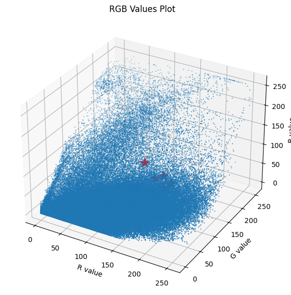

import numpy as np
import matplotlib.pyplot as plt
from sklearn.datasets import load_digits
from mpl_toolkits.mplot3d import Axes3DK Means
KMeans is a clustering algorithm that partitions a dataset into K distinct, non-overlapping subsets (clusters) based on similarity patterns within the data. It minimizes the sum of squared distances between data points and their assigned cluster centroids.
Import Libraries
KMeans on Dataset
Data
y = load_digits()
x = y.dataprint(y.data.shape)
print(y.target.shape)(1797, 64)
(1797,)Closest Centroids
def find_closest_centroids(X, centroids):
idx = np.zeros(X.shape[0], dtype=int)
distances = np.linalg.norm(X[:, np.newaxis, :]-centroids, axis=-1)
idx = np.argmin(distances, axis=1)
return idxNew Centroids
def compute_centroids(X, idx, centroids, k):
for i in range(k):
centroids[i] = np.mean(X[idx == i], axis=0)
return centroidsCost Fxn
def calculate_cost(X, idx, centroids):
cost = 0
for i in range(len(centroids)):
cluster_points = X[idx == i]
centroid = centroids[i]
squared_distances = np.sum((cluster_points - centroid) ** 2)
cost += squared_distances
return costKMeans
def run_kMeans(X, max_iters, k):
n, d = X.shape
centroids = X[np.random.choice(n, k, replace=False)]
print(f"{'Iteration':<10}{'Cost':<15}")
prev_cost=np.inf
cost=0
for i in range(max_iters):
if np.abs(prev_cost-cost)<1e-5:
break
idx = find_closest_centroids(X, centroids)
prev_cost=cost
cost = calculate_cost(X, idx, centroids)
print(f"{i + 1:<10}{cost:<15}")
centroids = compute_centroids(X, idx, centroids, k)
return centroids, idxAccuracy
a, b = run_kMeans(x, 500, 10)
print("Accuracy =", 100*np.mean(y.target == b) ,"%")Iteration Cost
1 2312326.0
2 1367849.205211381
3 1272514.7623466342
4 1230713.3819844497
5 1217124.8773493604
6 1214638.5685729042
7 1214183.403014829
8 1214039.6629300476
9 1213981.741130655
10 1213950.3799817525
11 1213908.3568474432
12 1213896.1627396639
13 1213875.909452301
14 1213848.8851707997
15 1213820.8739280729
16 1213820.8739280729
Accuracy = 19.47690595436839 %Image compression with K-means
Original Image
original_img = plt.imread('img.jpg')
plt.imshow(original_img)
plt.show()# Gives the blue intensity of the pixel at row 50 and column 33.
original_img[50, 33, 2]3print("Shape of original_img is:", original_img.shape)Shape of original_img is: (477, 350, 3)KMeans
X_img = np.reshape(
original_img, (original_img.shape[0] * original_img.shape[1], 3))
print("Shape of X_img is:", X_img.shape)Shape of X_img is: (166950, 3)max_iter = 30
k = 15
centroids, idx = run_kMeans(X_img, max_iter, k)Iteration Cost
1 40518784
2 49937840
3 38376899
4 48464334
5 38469257
6 44709319
7 45348539
8 48159095
9 46984087
10 41761944
11 45318104
12 45340223
13 46252334
14 47408590
15 40701877
16 48466062
17 52976465
18 50425878
19 48800590
20 49841789
21 50815087
22 46825849
23 47234052
24 50064839
25 45833848
26 44100214
27 44035480
28 42271855
29 46069851
30 46009134 RGB Values plot with Centroids
fig = plt.figure(figsize=(8, 6))
ax = fig.add_subplot(111, projection='3d')
ax.scatter(X_img[:, 0], X_img[:, 1], X_img[:, 2], s=0.3)
ax.set_xlabel('R value')
ax.set_ylabel('G value')
ax.set_zlabel('B value')
ax.set_title('RGB Values Plot')
ax.scatter(centroids[:, 0], centroids[:, 1], centroids[:, 2], s=200, alpha=1, marker='*', c='red', zorder=2)
fig.tight_layout()
plt.show()
Colors of Centroids
fig, axs = plt.subplots(1, len(centroids))
for i in range(len(centroids)):
axs[i].imshow(centroids[i].reshape(1, 1, 3))
axs[i].axis('off')
plt.show()Decomposed Image
X_recovered = centroids[idx, :]
X_recovered = np.reshape(X_recovered, original_img.shape)
plt.imshow(X_recovered)
plt.show()